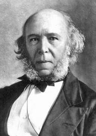

|
Herbert Spencer (1820-1903)
|
Las enseñanzas del Maestro Ciruela
La banda de los asesinos newtonianos
y el darwinismo social
Hubo una época en que una banda de asesinos cometían –y justificaban– sus crímenes con la ley newtoniana de la gravedad y la caída de los cuerpos. Soltaban objetos contundentes desde diferentes alturas sobre las cabezas de los transeúntes. No pudieron atrapar a ninguno, pero ellos mismos justificaban los asesinatos diciendo que ellos sólo dejaban en libertad a los cuerpos que eran los que terminaban con las vidas humanas que se interpusieran en su vertical camino natural. Se autodenominaban como un movimiento Newtonismo Social. Groso modo, mostraban un par de ecuaciones que, ellos pretendían, les daban la razón: lo que hacían estaba en concordancia con la naturaleza. Eran muy convincentes con el álgebra y la comunidad –incluso algunos físicos– no tardó en culpar a la teoría newtoniana por semejante salvajismo. Aquellos físicos que comprendían que Newton no tenía nada que ver con los asesinatos, aún así, tuvieron que desarrollar su ciencia a escondidas.
La historia parece demasiado estúpida como para poder ilustrar un hecho real. Sin embargo es exactamente lo que pasó con la banda de racistas, xenófobos, intolerantes (y hasta asesinos) enrolados en el darwinismo social. Según estos delincuentes, en las sociedades humanas se cumple la teoría de la evolución de Darwin (y en eso tienen razón) lo que justifica que el más apto sobreviva y el menos apto perezca (en eso no tienen ninguna). Para ellos, además, el más apto era el que por cualquier motivo ya hubiese triunfado (o sea los ricos o los miembros de la clase media que tuviesen un buen pasar) y los menos aptos, los negritos y los desposeídos de siempre. Su teoría, iniciada por el naturalista inglés Herbert Spencer, era (con mucha indulgencia) floja de papeles. Pero más allá de eso, y lamentablemente, lo que ocurrió es que aquí también la comunidad decidió condenar a la teoría de la evolución, a la que se le prohibió ocuparse de las sociedades humanas (sociedades animales no hay problema, se permite, pero humanas no, eso es casi facismo). Y lo que más pena me da es que muchos biólogos se hayan sumado a esta condena infantil, absurda.
En la actualidad llamamos sociobiología a la rama de la biología que explica una enorme cantidad de comportamientos sociales tanto animales como humanos desde la evolución. Sus pioneros tuvieron que soportar persecución y escarnio por parte de colegas y neófitos. Pero por suerte soportaron el embate y hoy la sociobiología tiene un empuje tremendo. El lente de Darwin permite comprender cada vez más y con mayor claridad características de nuestra sociedad y nuestros propios comportamientos sociales.
Pero todavía quedan trasnochados conspiranoicos que pretenden leer en los descubrimientos y los avances de la sociobiología un ataque a la cultura o a la condición humana.
Algunos derechos reservados. Se permite su reproducción citando la fuente. Última actualización nov-16. Buenos Aires, Argentina. |